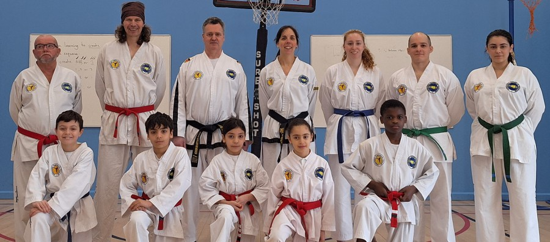

Contact & booking
Book your free taster class.
These are club contact details, not a manned office — but if you email or leave a message, we will get back to you.
New student enquiries
Get in touch
- Email k1.tkduk@gmail.com
- Phone 07526 081316
- Phone (alternate) 01779 821866
- Facebook Message "Independent Taekwon-Do Schools"
- School Secretary Mrs J Murdoch, M.A., Dip. Lib., A.L.A.

Clubs across Aberdeen, Bridge of Don, Peterhead and beyond are currently taking on new students — see the full list on Classes & Locations.
Before your first class
A few common questions
Do I need any experience to start?
No — every new student, child or adult, starts with a free taster class. Classes are mixed-grade, so complete beginners train alongside more experienced students under instructor supervision.
What should I wear for my first class?
You don't need a uniform (dobok) for your first visit — just wear something loose and comfy to train in. Instructors will let you know what to get if you decide to continue.
How do I book a free taster class?
Email k1.tkduk@gmail.com, call and leave a message on 07526 081316 or 01779 821866, or message the club's Facebook page — or simply turn up for a class at your nearest venue.
Which club is nearest to me?
The association runs classes at Aberdeen, Bridge of Don and Peterhead on a set weekly schedule, plus linked clubs at Aberdeen University, Inverurie and the Borders. See the full list with days and times on Classes & Locations.
Are the instructors qualified?
Yes — every instructor is PVG checked, First Aid qualified and Governing Body certified, led by Senior Master Murdoch, 8th Dan Black Belt. See the full team on Instructors.